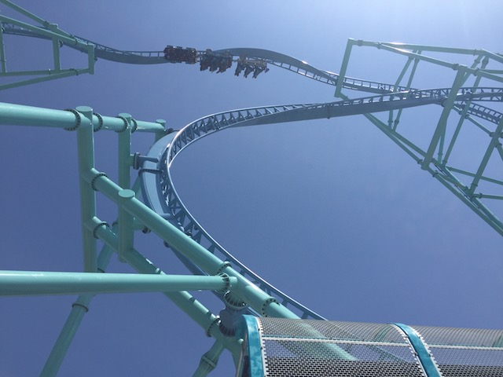
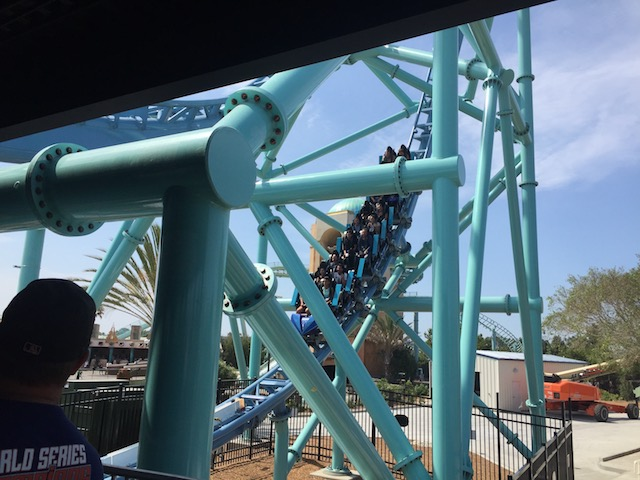

| |
Electric Eel Review

We're here at Sea World San Diego. Today's ride we'll be reviewing for you is Electric Eel. Yep, its one of those funky Premier coasters with the inline twist in the sky that keep popping up everywhere. They're essentially becoming the new Batman the Ride. And considering how much I like this ride, I don't mind clones of it popping up all around the world. All right. Let's get riding. We get in the seats, pull down the lap bar, pull down the comfort collar (*groan* They may not hurt, but I still wish that this ran with just lap bars), buckle the seatbelt, and we're off!! We launch foreword and go up the tower a little bit. We then fall backwards and get another kick of speed from the LIMs. This time we head up backwards and almost make it to the top of the Non-Inverting Loop. Ooh. Now things are really getting exciting. We then fall down and FLY through the LIMs, getting a nice injection of speed that takes us all the way to the top of the crazy structure. We rise up to the top of this thing. There's a small pop of airtime here, but on the ones with only 2 cars, the airtime here is really strong! Things then take a turn for the slow as we roll through an inline twist high above the ground. I'm always a fan of that, and it provides us with some good hangtime. But before we drop back down to the ground, we gotta slow down. Yep. Trim Brakes. Aww, lame. But hey, it's still a good ride. We then drop back down to the ground in a spiral drop that's really fun. We then go through a non-inverting loop. Except sadly, this one isn't nearly as good as Shock, as this one doesn't have airtime. But hey. I still really like it and it still gives us some good twisty bits and laterals. We then head back down the other half of the non-inverting loop and race through the station, back up the twisty climb, before falling back down and coming to a stop in the station. I must say, I was really impressed with this ride. It kind of reminds me of its neighbor, Full Throttle. They both have a high inversion with lots of hangtime, they both have big drops, they're both short, they both have twisty sections, and they both have a shuttle section. Except this one doesn't seem quite as gimmicky and allows for plenty of room for other attractions, like oh, I don't know. How about a log flume. =) But seriously, Electric Eel is a great ride. I'm glad its getting cloned around the world and I highly recommend you check it out sometime.
8/10
Location: Sea World San Diego
Opened: 2018
Built by: Premier
Last Ridden: February 15, 2020
I have ridden this exact same ride at the following parks.
Busch Gardens Williamsburg
Six Flags Discovory Kingdom
Electric Eel Photos





Home
|